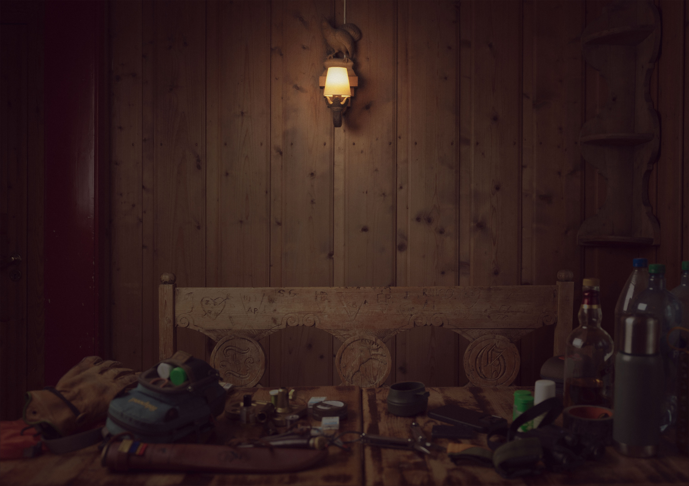
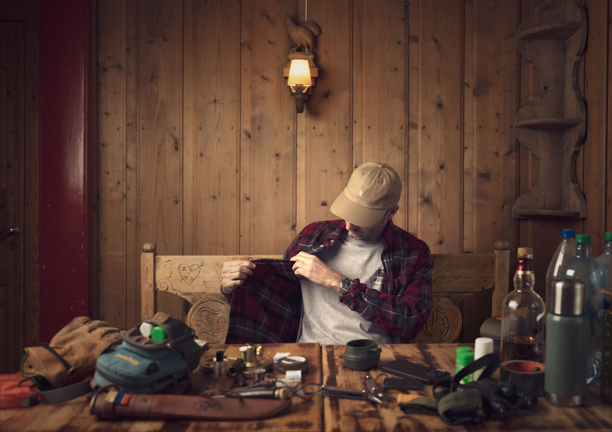

Andres Rafael Diaz-Nyhus, kjent under artistnavnet Diaz, er en norsk musiker og fluefisker fra Jessheim, like nord for Oslo. Etternavnet hans reflekterer spansk arv gjennom faren, mens moren er norsk med dype røtter på Jessheim.
Diaz ble en del av Oslos tidlige hiphop-miljø allerede på slutten av 1980-tallet, først som DJ. På begynnelsen av 1990-tallet hadde han en rekke roller som bidro til å forme miljøet: Han åpnet en hiphop-platebutikk, ga ut mixtapes, jobbet i plateselskap, var programleder på radio og arrangerte konserter – ofte sammen med produsent Tommy Tee, som skulle bli en viktig mentor. Da Tommy Tee i midten av 90-årene fokuserte mer på produksjon, gikk Diaz over til rapping. Han bidro på utgivelser med blant andre Helen Eriksen, Warlocks og N-Light-N (Son of Light), og dukket opp på sentrale skandinaviske hiphop-låter som «Takin’ Ova» og «Crossing Borders», sistnevnte i samarbeid med den svenske rapperen Petter.
Det engelskspråklige debutalbumet 2050 (2000) fikk oppmerksomhet både i USA og Europa, med gode anmeldelser fra blant annet Billboard Magazine og The Source. Noen år senere nådde Diaz et viktig internasjonalt høydepunkt gjennom samarbeidet med RZA fra Wu-Tang Clan på albumet The World According to RZA. I etterkant turnerte Diaz også med RZA, noe som åpnet døren for ytterligere samarbeid i årene som fulgte.
I 2003 ga han ut det norskspråklige albumet Velkommen hjem, Andres, som ble hans største kommersielle suksess. Albumet inneholdt flere spennende samarbeid, blant annet med Shagrath fra Dimmu Borgir, og bød på låter som «Hvem er denne karen?» og «Jessheim». Sistnevnte låt har siden blitt et kulturelt referansepunkt i Norge, og ble i 2012 samplet av Karpe i «Toyota’n til Magdi». I tillegg har «Jessheim» blitt benyttet en rekke ganger i andre sammenhenger, som i filmen Norske byggeklosser (2018), der handlingen var lagt til hjembyen.
Diaz sitt siste album, Jessheimfanden, kom ut i 2006, da han samtidig annonserte at han ville trekke seg tilbake fra musikkfeltet. «Mitt stille vann» ble albumets mest kjente låt og er i dag den mest strømmede låten fra Diaz’ katalog. Låten viste en ny og ukjent side av Diaz, der hans lidenskap for friluftsliv, spesielt fiske, kom tydelig fram. Etter musikken ble Diaz et kjent navn i det norske fluefiskermiljøet, og i 2013 ga han ut fluefiskedokumentaren Hekta. I 2020 ble Diaz inkludert i Millenniumsutstillingen på Rockheim – det nasjonale museet for populærmusikk.
I juni 2026 skal Diaz spille sammen med Tommy Tee og andre musikkollegaer i Operaen. Forestillingen handler om historien til plateselskapet Tee Productions, som Diaz har vært en del av siden den spede starten.
Alle henvendelser som gjelder booking av konserter, kan rettes til Linjebo Musikk på e-post: linjebomusikk@gmail.com
Alle henvendelser som gjelder foredrag om fluefiske, kan rettes til Linjebo Musikk på e-post: linjebomusikk@gmail.com
Kommer snart.
Kommer snart.